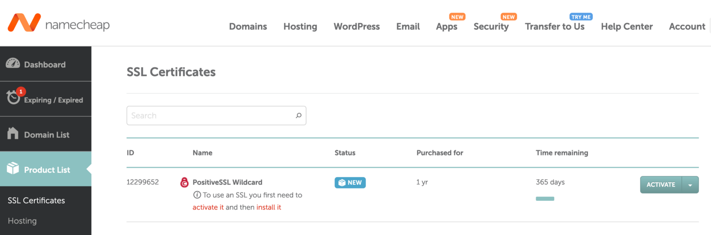
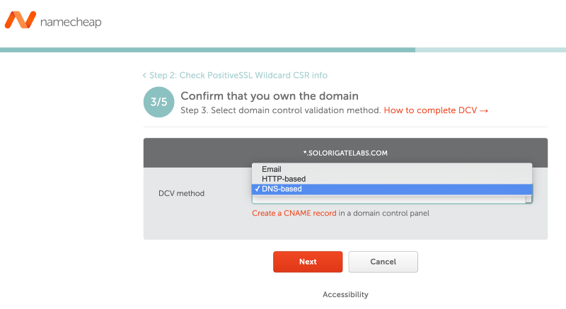

Getting a Certificate Signing Request and Activating a Trusted CA Signed SSL Certificate
Recently, I had to deploy an Active Directory Federation Services (ADFS) server in my lab environment and integrate it with Office 365. One thing that I did not know was that O365 required a valid SSL certificate from a trusted third party certificate authority (CA).
ADFS Certificates
There are 4 types of ADFS certificates
- Token Signing
- Used to digitally sign security tokens issued by ADFS
- Automatically generated and can be self-signed
- Token Decrypting
- Used to decrypt tokens received
- It can be self-signed
- Service Communications
- Server authentication certificate used for windows communication foundation (WCF) Message security
- It can be self-signed or issued and signed by a trusted third-party Certificate Authority
- Security Sockets Layer (SSL)
- Used to secure web traffic
- It can be self-signed or issued and signed by a trusted third-party Certificate Authority (CA)
The SSL and Service Communications certificates can be the same
In previous setups, I had set up ADFS servers with self-signed certificates for the Service Communications and SSL. However, in order to simulate the federated trust between my lab environment and office 365, I needed to set up my ADFS server with a trusted third party CA Signed SSL Certificate.
In this post. I will show you all the steps I took to generate a trusted CA signed SSL certificate all the way from the certificate signing request (CSR) to the activation and installation of the new certificate.
What is Certificate Authority?
Certificate Authority (CA) is an organization that is trusted to sign digital certificates. CA verifies identity and legitimacy of company or individual that requested a certificate and if the verification is successful, CA issues signed certificate.
Quick Recipe:
- Create certificate signing request (.csr) file.
- Buy SSL Certificate.
- Activate SSL certificate. Here is where you would use the .csr file.
- Download trusted SSL certificate
- Install trusted certificate
- Export certificate and private keys as a .pfx file
- Share certificate with servers (i.e. Domain Controller and ADFS)
1. Create Certificate Signing Request (.CSR) File
A CSR or Certificate Signing request is a block of encoded text that is given to a Certificate Authority when applying for an SSL Certificate.
I put together a PowerShell script named Get-CertSigningReq.ps1 to generate a .csr file. You would usually execute that script on the server where you would install the trusted certificate once you obtain one. However, you can do it on a separate system to then install and export the certificate and share it with other servers (I usually do this to use the trusted certificate in deployments as code).
Import PowerShell Module
- Log on to a Windows box (physical or virtual)
- Open PowerShell as Administrator
- Import the following module directly from GitHub
IEX (New-Object Net.WebClient).DownloadString('https://raw.githubusercontent.com/OTRF/Blacksmith/master/resources/scripts/powershell/misc/Get-CertSigningReq.ps1')
Create .CSR File
As I mentioned before, in my environment, I decided to use a Positive SSL Wildcard (multidomain) certificate. Therefore, when creating the .csr file, I set a * wildcard as a prefix of my domain .yourdomain.com for theSubject Common Name property of the request. You do not have to do that. That is just an option.
You can simple have yourdomain.com and that’s it. It is cheaper to buy a single domain SSL certificate.
Get-CertSigningReq -FriendlyName "*.youdomain.com site certificate" -Description "ADFS yourdomain.com certificate" -SubjectCommonName "*.yourdomain.com" -SubjectOrganizationUnit "Research" -SubjectOrganization "yourdomain.com" -SubjectCountry "US" -SubjectState "Texas" -SubjectLocality "Texas" -CertFilePath "Request.csr"
get-content .\Request.csr
Copy the contents of the .csr file and get ready to use it during the activation process of your new SSL certificate.
2. Buy SSL Certificate
I bought mine at namecheap.com and I usually get a PositiveSSL Wildcard certificate to secure multiple domains of a single one (i.e *.mydomain.com). Here are all the options you have in that site: https://www.namecheap.com/security/ssl-certificates/

You should then be ready to active the certificate. You will need the .csr file for the next steps

If you want to validate your base64 encoded CSR blob, you can do it with this tool provided by namecheap called Decoder.
3. Activate SSL certificate
In my case, I started the process by clicking on the Activate button shown in the previous image. I then was prompted to enter the contents of the .csr file

Either you bought your SSL certificate via namecheap.com or other provider, you will get to a step where you need to confirm that you own the domain which you requested the SSL certificate for. When you get to that step you will have a few options:
- Email: You would simply provide an e-mail address to which an approval e-mail will be sent.
- HTTP-Based: It usually involves uploading an activation file (i.e .txt) with a code to a hosting server.
- DNS-Based: You would usually need to create a CNAME record in the DNS settings of the domain.

After validating that you own the domain, you will be able to download the certificate (you might have to wait for a few minutes)

4. Install Certificate
- Log on to the computer where you created the .csr file
- Open PowerShell as Administrator
- Install the new SSL certificate (.cer or .crt files provided by your trusted provider) with the following command
$CertFile = Get-Item -Path NewSSLCert.cer
Import-Certificate -FilePath $CertFile.FullName -CertStoreLocation "cert:\LocalMachine\My"
5. Export Certificate and Private Key (.PFX Format)
On the same PowerShell console run the following commands to export the newly installed certificate as a .PFX file. The password that you use to export the certificate will be the same password that you will use to import the certificate file to your other servers. In my case it would be the Domain Controller and ADFS servers of my lab environment.
$InstalledCert = Get-ChildItem -Path "cert:\LocalMachine\My\" -DnsName "yourdomain.com"
Export-PfxCertificate -FilePath C:\ADFS.PFX -Cert $InstalledCert -Password (ConvertTo-SecureString "YOURPASSWORD" -AsPlainText -Force)
That’s it! I hope this short post was helpful and maybe serve you as a reference for future projects.
References
- https://www.namecheap.com/support/knowledgebase/article.aspx/334/38/what-is-certificate-authority-ca/
- https://www.namecheap.com/support/knowledgebase/article.aspx/10095/67/how-to-enable-an-ssl-certificate/
- https://www.namecheap.com/support/knowledgebase/article.aspx/794/67/how-do-i-activate-an-ssl-certificate/
- https://www.namecheap.com/support/knowledgebase/article.aspx/467/67/how-to-generate-csr-certificate-signing-request-code/
- https://www.ssls.com/knowledgebase/what-is-csr/
- https://www.namecheap.com/support/knowledgebase/article.aspx/9637/68/how-can-i-complete-the-domain-control-validation-dcv-for-my-ssl-certificate/?_ga=2.199643694.1278617947.1608673309-1707679281.1608673309
- https://www.namecheap.com/support/knowledgebase/article.aspx/9646/2237/how-to-create-a-cname-record-for-your-domain/
- https://decoder.link/result
Subscribe to Open Threat Research Blog
Get the latest posts delivered right to your inbox